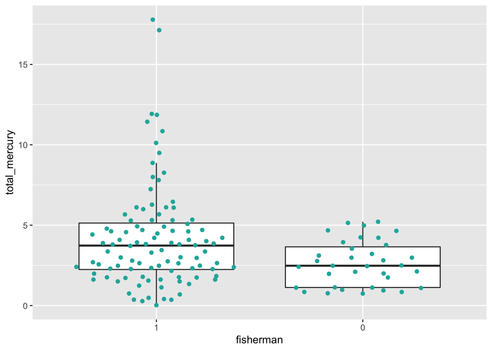
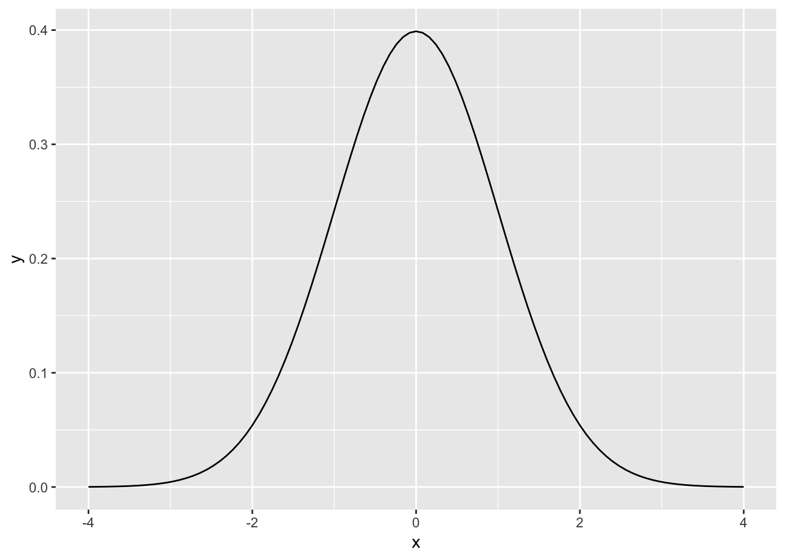
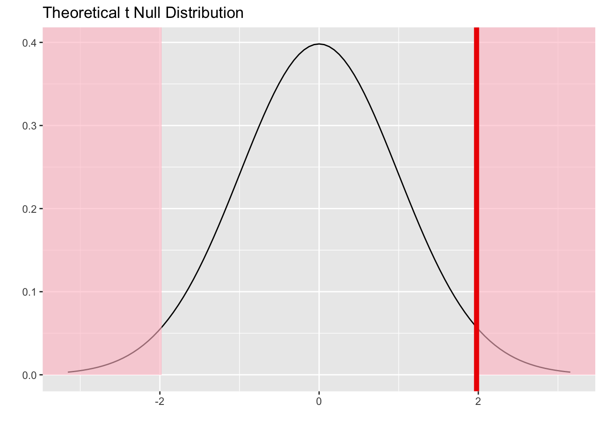
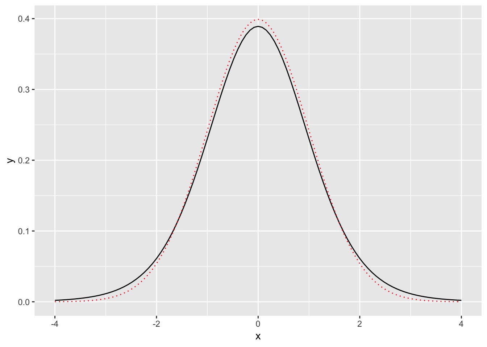
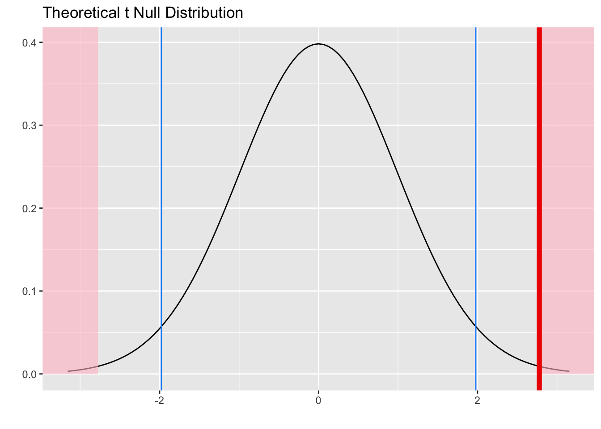
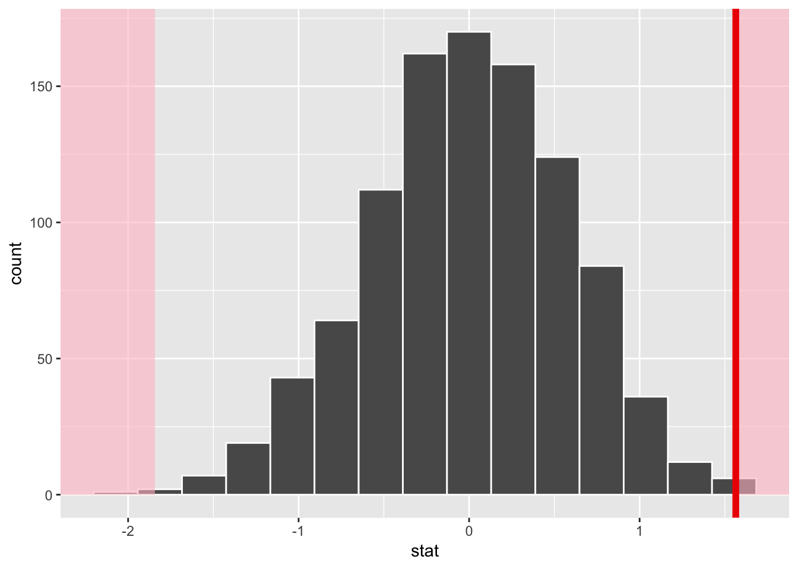
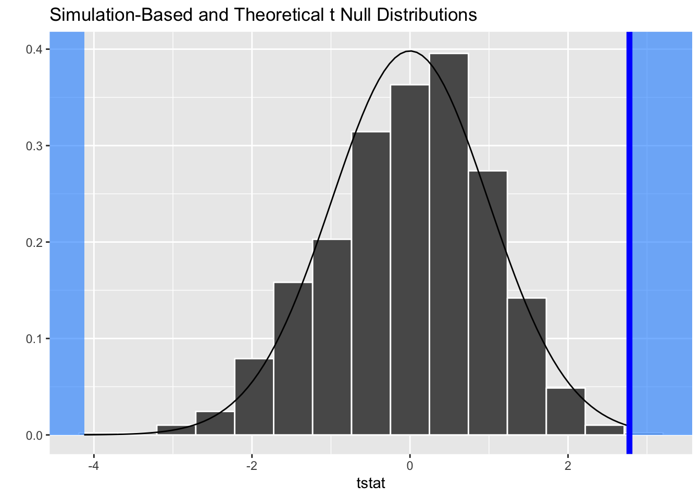

CONJ620: CM 3.6
Integrative Lab- Key
Alison Presmanes Hill
Self-Assessment
Start with your initial submission, and save it as a new file. Then add a sub-section to each of the sections with content called "Self-Assessment".
You may want to add color formatting to further highlight the self-assessment section. You can change the color of the font by using
<span style="color:deeppink">span styles like this</span>.If you want to change the color of a bulleted list, change
spantouland use the same method (pick any color).- My code is provided here so that you can problem solve- if you need to copy and paste, do so in your self-assessment section, but you'll need to include narrative including attribution and reflection on what part of that code chunk you struggled with and why.
How to:
Overview
The goal of this lab is to carefully, thoroughly, and thoughtfully compare two group means and understand the results. You are also asked to communicate clearly about the steps in your analysis process with others, by sharing your R code, output, and narrative. As such, your code cannot "stand alone"- it is meant to complement / enhance / support your narrative. As with our previous integrative lab, this lab will be due in two stages:
- A complete knitted
htmlfile is due on Sakai by Thursday August 30th at 2:30pm. - After class on August 30th, you'll be provided with a code key. You are asked to review your initial submission, and reflect on your own code/narrative after reviewing the key thoroughly. Your self-assessment is due on Sakai by beginning of class Thursday September 6th (2:30pm).
Using the key, your self-assessment should include even more narrative; where you made mistakes, you must discuss and analyze where you went wrong, and correct them without copying/pasting directly from the key (this typically means that you need to include more narrative than we provide in the key). A good self-assessment will include:
- Assessment of the accuracy and completeness of your "initial solutions"
- Correct worked solutions with some discussion and analysis of why your initial solution was incorrect, and reflection on the source of your confusion (if you got an answer correct, this is not necessary)
- Attributions as appropriate to other students who helped you, or other sources such as lecture notes, readings, online resources, etc. that helped you
Headnotes
- This lab is based on the assigned reading that includes ModernDive Chapter 10.8 on t-tests for comparing two independent samples. Please open and follow closely!
- Also see ModernDive Appendix B for examples (search for:
B.5.5 Traditional methods) - Parts of this lab are adapted from Ted Laderas' and Jessica Minnier's R Bootcamp on DataCamp.com
Packages
Please install a new version of infer first:
remotes::install_github("tidymodels/infer", ref = "develop")library(tidyverse)
library(infer)
library(skimr)
library(broom)
library(moderndive)Data
We are going to work with a dataset called fishermen_mercury.csv, which consists of factors related to mercury levels among fishermen and a control group of non-fishermen. The data are published within the paper available online. Here is the citation for the peer-reviewed publication:
N.B. Al-Majed and M.R. Preston (2000). "Factors Influencing the Total Mercury and Methyl Mercury in the Hair of Fishermen in Kuwait," Environmental Pollution, Vol. 109, pp. 239-250.
mercury <- read_csv(here::here("data", "fishermen_mercury.csv"),
col_types = cols(
fisherman = col_factor(levels = NULL))
)Variables in this dataset include:
- Fisherman indicator (
fisherman) - Age in years (
age) - Residence Time in years (
restime) - Height in cm (
height) - Weight in kg (
weight) - Fish meals per week (
fishmlwk) - Parts of fish consumed:
- 0=none,
- 1=muscle tissue only,
- 2=mt and sometimes whole fish,
- 3=whole fish (fishpart)
- Methyl Mercury in mg/g (
methyl_mercury) - Total Mercury in mg/g (
total_mercury)
Motivating research question
Do fishermen have different levels of total mercury than non-fishermen?
Exploratory data analysis
Explore the fisherman and total_mercury variables. Recall that a new exploratory data analysis involves three things:
- Looking at the raw values.
- Computing summary statistics of the variables of interest.
- Creating informative visualizations.
General functions that we have used at this stage:
dplyr::glimpse()skimr::skim()- Given the two-group design, you may wish to do a
dplyr::group_by()first here
- Given the two-group design, you may wish to do a
ggplot2::ggplot()geom_histogram()orgeom_density()orgeom_boxplot()for numeric continuous variables- Given the two-group design, you may wish to combine these with
facet_wrap()
- Given the two-group design, you may wish to combine these with
geom_bar()orgeom_col()for categorical variables
You may also find your want to use filter, mutate, arrange, select, or count. Let your questions lead you!
EDA Solutions
I'll leave this mainly to you, just a few commands here:
glimpse(mercury)Observations: 135
Variables: 9
$ fisherman <fct> 1, 1, 1, 1, 1, 1, 1, 1, 1, 1, 1, 1, 1, 1, 1, 1,...
$ age <dbl> 45, 38, 24, 41, 43, 58, 45, 46, 46, 46, 35, 25,...
$ restime <dbl> 6, 13, 2, 2, 11, 2, 6, 0, 14, 5, 2, 2, 0, 12, 1...
$ height <dbl> 175, 173, 168, 183, 175, 176, 184, 170, 175, 17...
$ weight <dbl> 70, 73, 66, 80, 78, 75, 85, 68, 80, 75, 76, 66,...
$ fishmlwk <dbl> 14, 7, 7, 7, 21, 21, 21, 7, 21, 7, 21, 21, 21, ...
$ fishpart <dbl> 2, 1, 2, 1, 1, 1, 1, 2, 1, 1, 2, 2, 2, 2, 2, 2,...
$ methyl_mercury <dbl> 4.011, 4.026, 3.578, 10.988, 10.520, 6.169, 17....
$ total_mercury <dbl> 4.484, 4.789, 3.856, 11.435, 10.849, 6.457, 17....mercury %>%
group_by(fisherman) %>%
skim()Skim summary statistics
n obs: 135
n variables: 9
group variables: fisherman
Variable type: numeric
fisherman variable missing complete n mean sd p0 p25
1 age 0 100 100 34.92 8.92 16 28
1 fishmlwk 0 100 100 8.45 4.85 3 7
1 fishpart 0 100 100 1.9 0.52 1 2
1 height 0 100 100 174.16 7.64 154 170
1 methyl_mercury 0 100 100 4.02 3.13 0.019 2.09
1 restime 0 100 100 5.36 5.8 0 1
1 total_mercury 0 100 100 4.18 3.22 0.025 2.24
1 weight 0 100 100 72.8 7.01 59 68
0 age 0 35 35 30.43 2.6 26 28
0 fishmlwk 0 35 35 1.03 0.79 0 0
0 fishpart 0 35 35 1.17 0.86 0 0
0 height 0 35 35 175.14 3.57 170 174
0 methyl_mercury 0 35 35 2.56 1.39 0.73 1.06
0 restime 0 35 35 2.4 0.55 1 2
0 total_mercury 0 35 35 2.62 1.4 0.74 1.13
0 weight 0 35 35 74.17 5.57 61 70
p50 p75 p100 hist
33 42 58 ▁▆▇▇▃▅▂▁
7 7 21 ▂▇▁▁▁▁▁▁
2 2 3 ▂▁▁▇▁▁▁▁
173.5 180 195 ▁▂▁▇▅▅▂▁
3.46 4.97 17.21 ▅▇▅▁▁▁▁▁
3 11 25 ▇▂▁▁▂▁▁▁
3.73 5.13 17.79 ▅▇▅▁▁▁▁▁
72.5 76 92 ▃▆▇▇▅▂▂▁
30 32 35 ▃▇▆▆▂▆▂▇
1 2 2 ▆▁▁▇▁▁▁▆
1 2 2 ▅▁▁▅▁▁▁▇
175 178.5 180 ▃▁▁▇▁▁▁▅
2.37 3.59 5.11 ▇▁▆▃▃▂▂▃
2 3 3 ▁▁▁▇▁▁▁▆
2.48 3.65 5.21 ▇▁▃▆▂▂▂▃
74 78 84 ▁▂▃▇▇▆▂▅library(ggbeeswarm)
ggplot(mercury, aes(x = fisherman, y = total_mercury)) +
geom_boxplot(outlier.shape = NA) +
geom_quasirandom(fill = "lightseagreen",
colour = "lightseagreen") 
Check conditions
Remember that in order to use the short-cut (formula-based, theoretical) approach, we need to check that some conditions are met. The infer package does not automatically check conditions for the theoretical methods to work. In order for the results of the \(t\)-test to be valid, three conditions must be met:
- Independent observations in both samples
- Nearly normal populations OR large sample sizes (\(n \ge 30\))
- Independently selected samples
- For this lab, we'll also assume that the variance in the response/outcome variable is the same for both groups
Write a few sentences to address each of these conditions.
\(t\)-test for two independent samples
The following are excerpts from ModernDive:
"The most common normalization is known as the \(z\)-score. The formula for a \(z\)-score is
\[{\displaystyle Z = \frac{x - \mu}{\sigma}}\]
where \(x\) represent the value of a variable, \(\mu\) represents the mean of the variable, and \(\sigma\) represents the standard deviation of the variable. Thus, if your variable has 10 elements, each one has a corresponding \(z\)-score that gives how many standard deviations away that value is from its mean. \(z\)-scores are normally distributed with mean 0 and standard deviation 1. They have the common, bell-shaped pattern seen below."

"Recall, that we hardly ever know the mean and standard deviation of the population of interest. This is almost always the case when considering the means of two independent groups. To help account for us not knowing the population parameter values, we can use the sample statistics instead, but this comes with a bit of a price in terms of complexity."
Test statistic \(\delta\)
"Another form of normalization occurs when we need to use the sample standard deviations as estimates for the unknown population standard deviations. This normalization is often called the \(t\)-score."
For the two independent samples case like what we have for comparing fishermen to non-fishermen, the formula is \[{\displaystyle T={\frac {({\bar {x}}_{1}-{\bar {x}}_{2})- (\mu_1-\mu_2)}{s_{p}\times {\sqrt {{\frac {1}{n_{1}}}+{\frac {1}{n_{2}}}}}}}}\]
where...
- \(\bar{x}_1\) is the sample mean response of the first group
- \(\bar{x}_2\) is the sample mean response of the second group
- \(\mu_1\) is the population mean response of the first group
- \(\mu_2\) is the population mean response of the second group
- \(s_p\) is the pooled standard deviation of the two samples
- The overall denominator is called the standard error of the difference between means.
From the Minitab blog:
"A t-value of 0 indicates that the sample results exactly equal the null hypothesis. As the difference between the sample data and the null hypothesis increases, the absolute value of the t-value increases."
Note that the quantity \((\mu_1 - \mu_2)\) is typically 0 under the null hypothesis, so the actual computational formula for the \(t\)-statistic is:
\[{\displaystyle T={\frac {{\bar {x}}_{1}-{\bar {x}}_{2}}{s_{p}\times {\sqrt {{\frac {1}{n_{1}}}+{\frac {1}{n_{2}}}}}}}}\]
where...
\[{\displaystyle s_{p}={\sqrt {\frac {\left(n_{1}-1\right)s_{1}^{2}+\left(n_{2}-1\right)s_{2}^{2}}{n_{1}+n_{2}-2}}}}\]
where...
- \(s_1\) is the sample standard deviation of the response of the first group
- \(s_2\) is the sample standard deviation of the response of the second group
- \(n_1\) is the sample size of the first group
- \(n_2\) is the sample size of the second group
The \(s_p\) here is called the "pooled standard deviation." Now that we have two samples (in our case, fishermen and non-fishermen), we have two standard deviations. Recall that in order to calculate the standard error of one mean we divided the sample standard deviation by the square root of \(N\). The pooled standard error is the same idea, but after combining the standard deviations from two samples. The calculation is important, as it assumes that there is not a difference in the standard deviations between the two groups, and hence they can be pooled. Remember that \(s^2\) is the squared standard deviation, which we know is the variance (i.e., var(x1) = (sd(x1))^2 and sd(x1) = sqrt(var(x1))).
Test statistic solutions
Given the above formulas, answer the following questions using R code plus narrative:
- What is the pooled standard error for the
total_mercuryvariable? (try to make all quantities here defined variables usingdplyr::group_by() %>% summarize() %>% filter() %>% pull())
In my answer, I calculated the "pooled standard deviation" as
sd_pooled, and the standard error of the difference in means asse_diff.
(mercury_stats <- mercury %>%
group_by(fisherman) %>%
summarize(avg_mercury = mean(total_mercury, na.rm = TRUE),
var_mercury = var(total_mercury, na.rm = TRUE),
n_groups = n()))# A tibble: 2 x 4
fisherman avg_mercury var_mercury n_groups
<fct> <dbl> <dbl> <int>
1 1 4.18 10.4 100
2 0 2.62 1.97 35n_f <- mercury_stats %>% filter(fisherman == 1) %>% pull(4) # fishermen
n_nf <- mercury_stats %>% filter(fisherman == 0) %>% pull(4) # non fishermen
var_f <- mercury_stats %>% filter(fisherman == 1) %>% pull(3) # var fishermen
var_nf <- mercury_stats %>% filter(fisherman == 0) %>% pull(3) # var non fishermen
num_sp <- ((n_f - 1)* var_f) + ((n_nf - 1)* var_nf)
denom_sp <- n_f + n_nf - 2
(sd_pooled <- sqrt(num_sp / denom_sp))[1] 2.867578(se_diff <- sd_pooled * sqrt((1/n_f) + (1/n_nf)))[1] 0.5631811- What are the minimum \(t\)-statistic values we need to conclude that there is a significant difference at \(\alpha = .05\) (2-tailed)? (hint: degrees of freedom for a two-sample t-test are \(N\) - 2)
nsamp <- 135
(tcrits <- qt(c(.025, .975), df = nsamp - 2))[1] -1.977961 1.977961- Use the following code to plot these critical t-values.
upper_tcrit <- # fill in here
mercury %>%
specify(total_mercury ~ fisherman) %>%
hypothesize(null = "independence") %>%
calculate(stat = "t", order = c(1,0)) %>%
visualize(method = "theoretical",
obs_stat = upper_tcrit,
direction = "both") # gives us shadingupper_tcrit <- tcrits[2] # fill in here
mercury %>%
specify(total_mercury ~ fisherman) %>%
hypothesize(null = "independence") %>%
calculate(stat = "t", order = c(1,0)) %>%
visualize(method = "theoretical",
obs_stat = upper_tcrit,
direction = "both")
- Now we know the minimum \(t\)-statistic value we need to beat, what is the minimum absolute value for the mean difference we need to detect significance with \(\alpha = .05\) (2-tailed)? (big hint: realize that the rearranged formula below may be helpful!)
\[{\displaystyle T \times {s_{p}\times {\sqrt {{\frac {1}{n_{1}}}+{\frac {1}{n_{2}}}}}}}={{\bar {x}}_{1}-{\bar {x}}_{2}}\]
(meancrits <- tcrits * se_diff)[1] -1.11395 1.11395- Complete this sentence filling in numbers from your above calculations:
With \(n_1\) fisherman and \(n_2\) non-fishermen, given the variability in total mercury present in this sample, we will reject the null hypothesis that there is no difference in total mercury levels between the two groups if we obtain a \(t\)-statistic greater than X (absolute value, \(\alpha\) = .05, 2-tailed). This is equivalent to saying we will reject the null hypothesis if we obtain a mean difference greater than X (absolute value, \(\alpha\) = .05, 2-tailed).
With 100 fisherman and 35 non-fishermen, given the variability in total mercury present in this sample, we will reject the null hypothesis that there is no difference in total mercury levels between the two groups if we obtain a \(t\)-statistic greater than 1.977961 (absolute value, \(\alpha\) = .05, 2-tailed). This is equivalent to saying we will reject the null hypothesis if we obtain a mean difference greater than 1.11395 (absolute value, \(\alpha\) = .05, 2-tailed).
Observed effect \(\delta^*\)
Answer the following questions using R code and narrative:
Observed effect solutions
- What mean difference (raw) did we observe? Is it greater than the minimum mean difference we need to beat? (hint: try
infer::specifythencalculatewithstat = "diff in means").
mean_diff <- mercury %>%
specify(total_mercury ~ fisherman) %>%
calculate(stat = "diff in means",
order = c(1, 0))
mean_diff# A tibble: 1 x 1
stat
<dbl>
1 1.56mean_diff > meancrits stat
[1,] TRUE- Calculate the \(t\)-statistic "by hand" using R. Is it greater than the minimum \(t\)-statistic we need to beat? (here is the formula again):
\[{\displaystyle T={\frac {{\bar {x}}_{1}-{\bar {x}}_{2}}{s_{p}\times {\sqrt {{\frac {1}{n_{1}}}+{\frac {1}{n_{2}}}}}}}}\]
(calc_t <- mean_diff / se_diff) stat
1 2.777389calc_t > tcrits stat
[1,] TRUE- Do a classical 2-sample t-test (assuming equal variances, more on this later) in R using
infer, do the results match your calculations?:
mercury %>%
t_test(total_mercury ~ fisherman, order = c(1, 0), var.equal = TRUE) statistic t_df p_value alternative lower_ci upper_ci
1 2.777389 133 0.006271902 two.sided 0.4502225 2.678123- Interpret this output. What is the statistic? What is the meaning/interpretation of the confidence interval here? (hint: Does it include zero? What does it mean if it does or does not? What value is in the center of the interval?)
obs_t <- mercury %>%
t_test(total_mercury ~ fisherman, order = c(1, 0), var.equal = TRUE) %>%
pull(1)- Use the code below to compare the normal distribution to the \(t\)-distribution, which has only one parameter: degrees of freedom (
df). You can use thedtanddnormwith thestat_functionlayer inggplotto plot the densities for each distribution. Change thedfargument here a few times to view its effect: what do you see? (you don't need to print any of these plots to your final file- I want you to reflect on how the two distributions differ).
df <- 10
ggplot(data.frame(x = c(-4, 4)), aes(x)) +
stat_function(fun = dt, args = list(df = df)) + # t dist
stat_function(fun = dnorm, lty = 3, color = "red") # normal dist in red
- Save your observed \(t\)-statistic, and use
inferto make a plot of the null t-distribution with a red line for yourobs_stat, shading in both directions. Try addinggeom_vline()to this object so you can add vertical lines where your two "critical t-values" are.
mercury %>%
specify(total_mercury ~ fisherman) %>%
hypothesize(null = "independence") %>%
calculate(stat = "t", order = c(1,0), var.equal = TRUE) %>%
visualize(method = "theoretical",
obs_stat = obs_t,
direction = "both") +
geom_vline(aes(xintercept = tcrits), color = "dodgerblue")
The theoretical p-value
But, how can we calculate the p-value from this? Well the easy way is with your infer output :) But! Remember that your observed \(t\)-statistic is a quantile value for a statistic that we assume follows a \(t\)-distribution. How do we calculate the probability of getting a \(t\)-statistic as or more extreme than the one we got? We use pt()!
Theoretical p-value solution
- Use
pt()to calculate the 2-sided p-value in R. Does it match the output frominfer?
upper <- pt(obs_t, df = nsamp - 2)
lower <- 1-pt(obs_t, df = nsamp - 2)
2*min(upper,lower)[1] 0.006271902The theoretical confidence interval
Unfortunately, we currently can't get the confidence interval for theoretical methods using infer. But we can use formulas (yay):
\[ ({\bar {x}}_{1}-{\bar {x}}_{2}) \pm (t_{\star} \times SE_{{\bar {x}}_{1}-{\bar {x}}_{2}})\] where...
\[SE_{{\bar {x}}_{1}-{\bar {x}}_{2}} = s_{p} \times \sqrt {{\frac {1}{n_{1}}}+{\frac {1}{n_{2}}}}\] You should already have variables for the mean difference and the \(t\)-statistic critical value(s) (here, \(t_{\star}\)) from the top formula. In the bottom formula, that standard error should look familiar- it is the standard error of the difference between means. This was the denominator in your calculated \(t\)-statistic.
Theoretical CI solution
- Use these values to calculate the 95% confidence interval for the difference in means. Does it match the output from
infer? Does it contain zero? Will this interval ever not contain the observed difference in sample means?
ll <- mean_diff - (tcrits[2]*se_diff)
ul <- mean_diff + (tcrits[2]*se_diff)
c(ll, ul)$stat
[1] 0.4502225
$stat
[1] 2.678123Compare t-test results to permutation test
Using ModernDive 10.7 as an example, as well as our previous resampling lab, conduct a permutation test to evaluate whether there is a mean difference in total mercury between fishermen and non-fishermen. What do you conclude, and how do these results compare to those based on the classical hypothesis test? What, if any, assumptions of each method are comfortable or uncomfortable with?
Permutation test solution
set.seed(0)
mercury_diff <- mercury %>%
specify(total_mercury ~ fisherman) %>%
calculate(stat = "diff in means", order = c(1, 0))
null_fish <- mercury %>%
specify(total_mercury ~ fisherman) %>%
hypothesize(null = "independence") %>%
generate(reps = 1000, type = "permute") %>%
calculate(stat = "diff in means", order = c(1, 0))
null_fish %>%
visualize(obs_stat = mercury_diff, direction = "two_sided")
(pdiff <- null_fish %>%
get_pvalue(obs_stat = mercury_diff, direction = "two_sided"))# A tibble: 1 x 1
p_value
<dbl>
1 0.007
The permutation test of the difference in means compares my observed difference in means, 1.56, to the permuted null distribution of the differences in means based on 1000 replicates (sampling without replacement; i.e., shuffling the 0/1 values in the fisherman variable). The permutation p-value is 0.01, indicating that- given the random variation present in total_mercury values- a difference in means as or more extreme than 1.56 would only be expected with 0.7% probability.
I could also permute a t-statistic, and interpret the p-value based on the permutation null distribution, instead of using the theoretical t-distribution to calculate the formula p-value.
null_fish_t <- mercury %>%
specify(total_mercury ~ fisherman) %>%
hypothesize(null = "independence") %>%
generate(reps = 1000, type = "permute") %>%
calculate(stat = "t", order = c(1, 0), var.equal = TRUE)
# note the method here to overlay theoretical t dist
# changing the colors so it is clear
null_fish_t %>%
visualize(obs_stat = obs_t, direction = "two_sided", method = "both",
obs_stat_color = "blue", pvalue_fill = "dodgerblue")
(tdiff <- null_fish_t %>%
get_pvalue(obs_stat = obs_t, direction = "two_sided"))# A tibble: 1 x 1
p_value
<dbl>
1 0.009The permutation test of the t-statistic compares my observed t-statistic, 2.78, to the permuted null distribution of the t-statistic based on 1000 replicates (sampling without replacement; i.e., shuffling the 0/1 values in the fisherman variable). The permutation p-value is 0.01, indicating that- given the random variation present in total_mercury values- a t-statistic as or more extreme than 2.78 would only be expected with 0.9% probability. This lines up pretty well with my results based on the theoretical t-distribution, which gave a p-value of 0.006.
Compare t-test results to linear regression
Use a simple linear regression to analyze total_mercury ~ fisherman. Look carefully at the output, and compare to the output of the classical t-test. What do you notice is the same?
LM Solution
# fit the univariate model
mercury_mod <- lm(total_mercury ~ fisherman,
data = mercury)
get_regression_table(mercury_mod)# A tibble: 2 x 7
term estimate std_error statistic p_value lower_ci upper_ci
<chr> <dbl> <dbl> <dbl> <dbl> <dbl> <dbl>
1 intercept 4.18 0.287 14.6 0 3.61 4.75
2 fisherman0 -1.56 0.563 -2.78 0.006 -2.68 -0.45get_regression_summaries(mercury_mod)# A tibble: 1 x 8
r_squared adj_r_squared mse rmse sigma statistic p_value df
<dbl> <dbl> <dbl> <dbl> <dbl> <dbl> <dbl> <dbl>
1 0.055 0.048 8.10 2.85 2.87 7.71 0.006 2- The intercept is the mean
total_mercuryfor the fisherman == 1 group - The estimate for
fisherman0is the difference in meantotal_mercuryfor the fisherman == 0 group relative to the mean for the fisherman == 1 group - The p-value for
fisherman0is the same is the same as the overall p-value for thelmmodel - The absolute value of the t-statistic for
fisherman0is equal to the observed t-statistic for the 2-sample test with variances equal